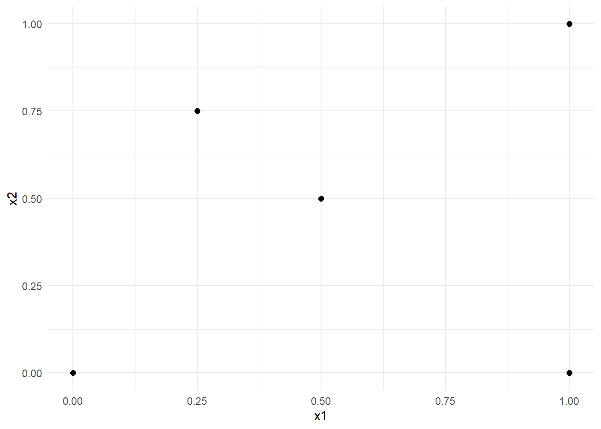
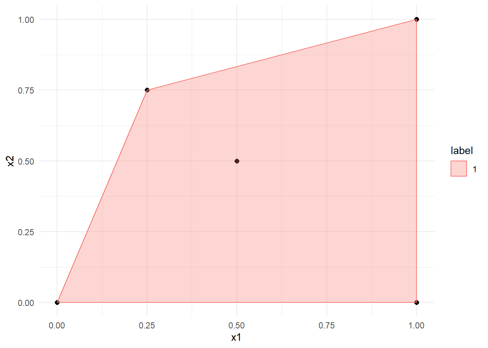
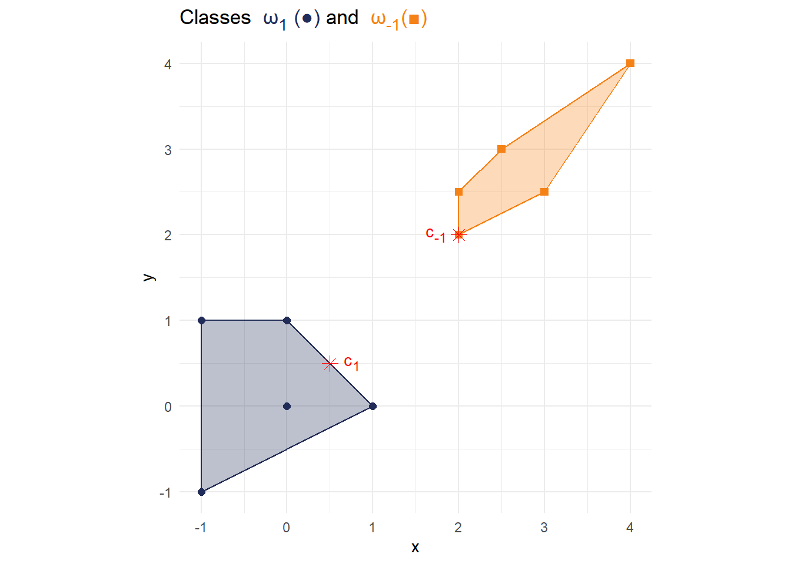
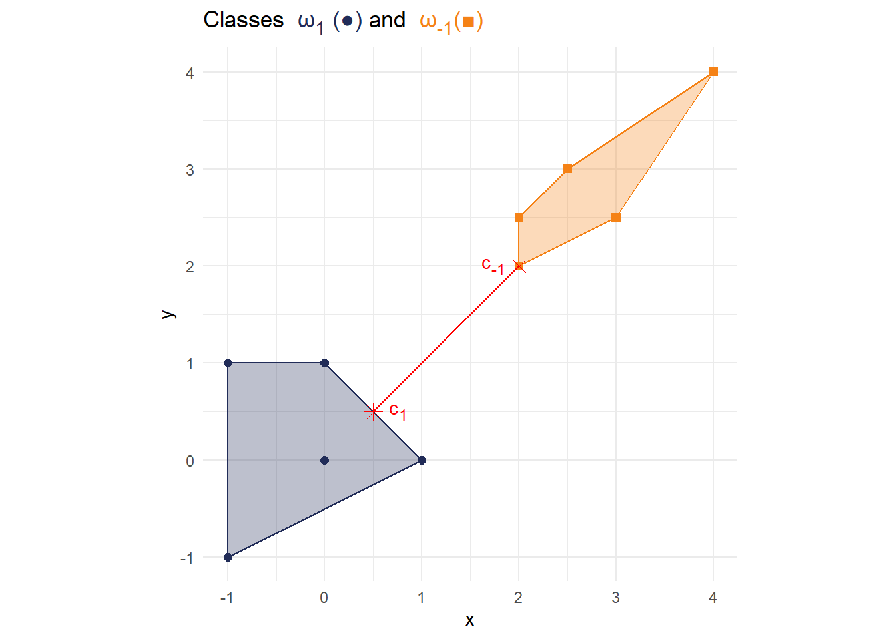
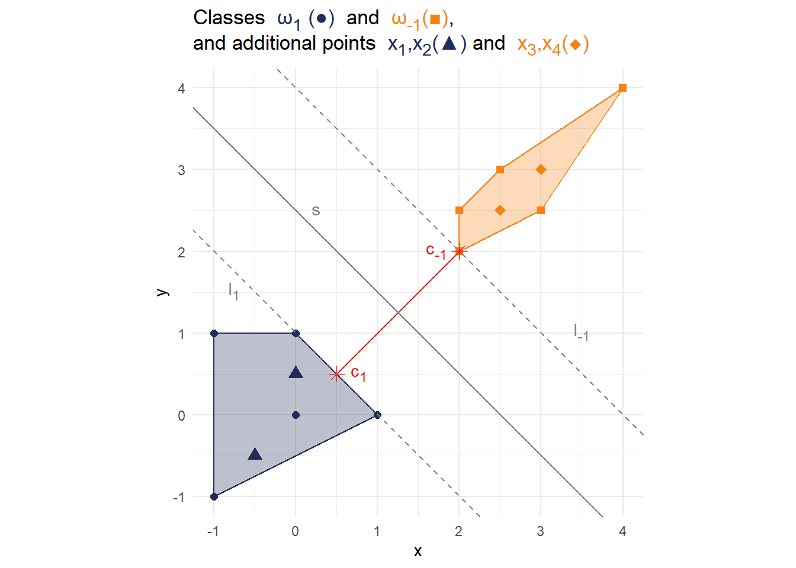
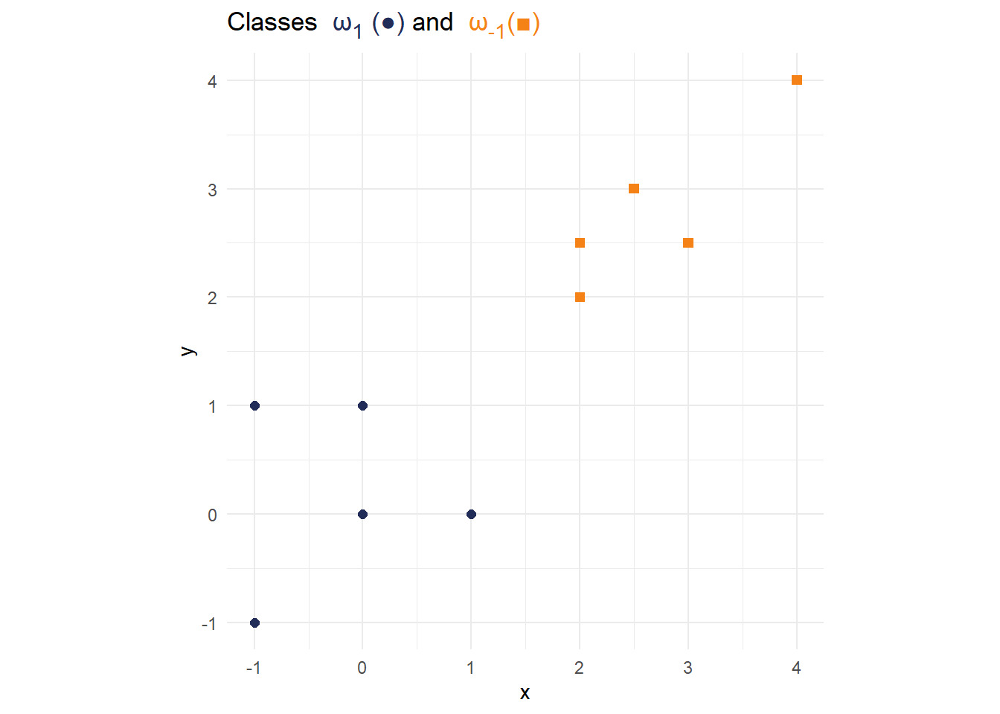
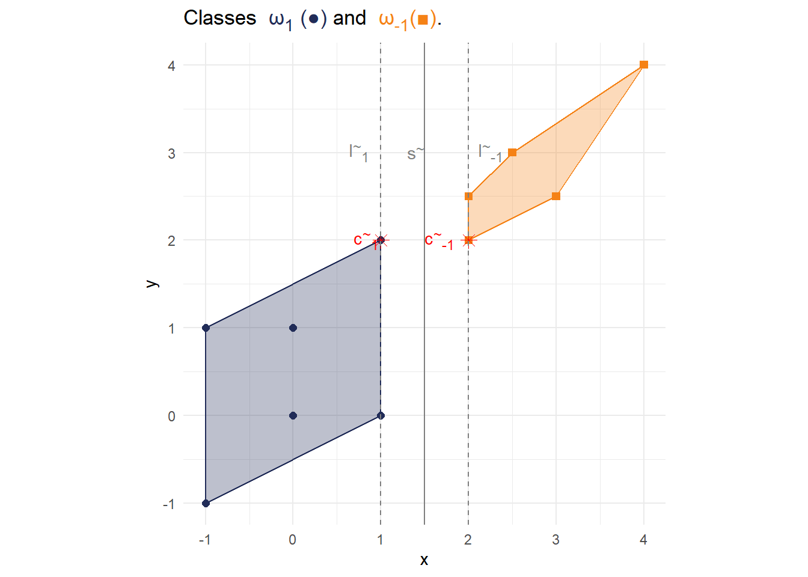
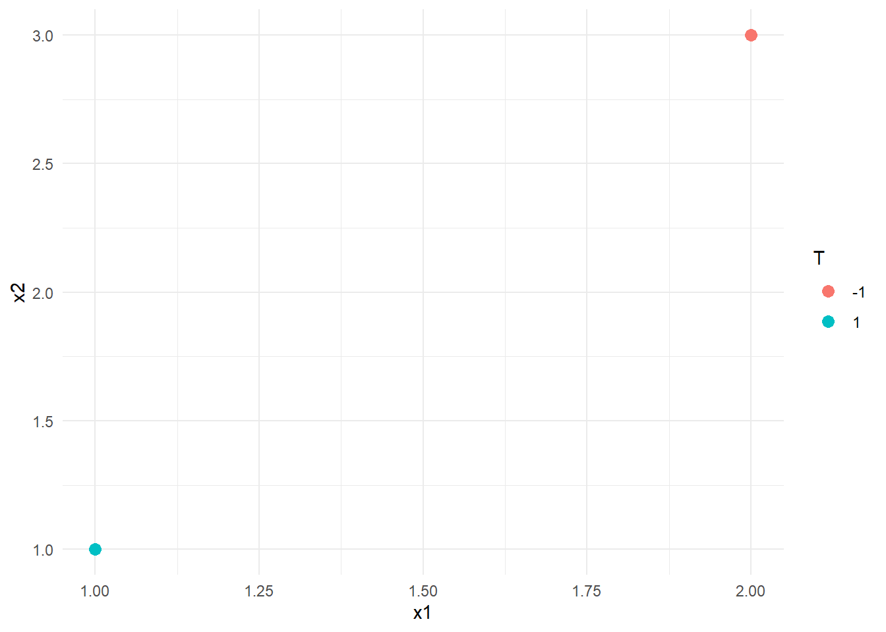
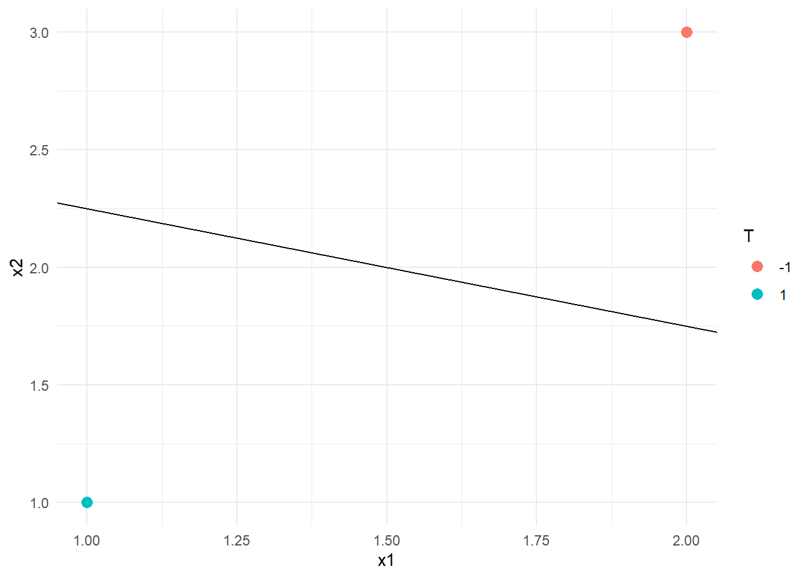
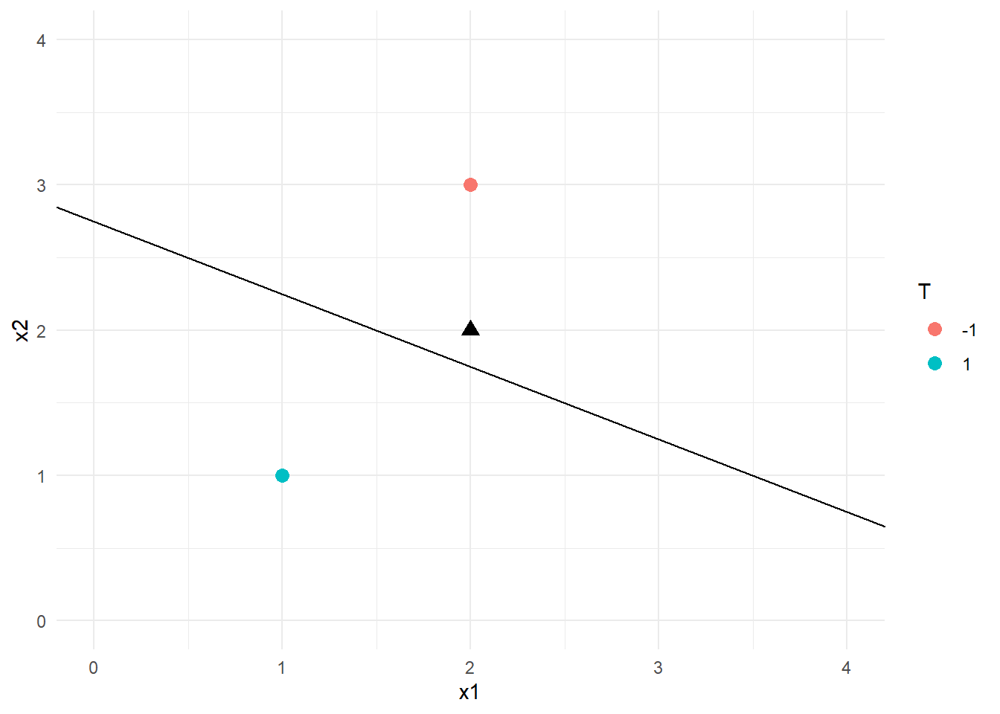

setwd(here::here('Session 7'))
library("tidyverse")
library("ggtext")Problem Set 07: Solution
Foreword
On this exercise sheet we will consider simple linear maximum margin classifiers. In order to solve the first exercise, you can either draw everything by hand in the figures provided, or create your own plots (for example with the {ggplot} package). The solution will feature plots created with {ggplot}.
Exercises
Exercise 01: Linear maximum margin classifiers (Visual)
Linear Maximum margin classifiers or linear support vector machines allow us to classify binary data using a geometric approach. In two dimensions, we can use a simple line that separates the classes (under the assumption that they are indeed separable) and additionally maximizes the margins between those classes. In this exercise, we will consider an example of such a dataset and the way we can construct a linear classifier. The following figure shows the two-dimensional data we will be using for this exercise. Each point \(x\in\mathbb{R}^2\) belongs either to the positive class \(\omega_1\) (blue, circles) or negative class \(\omega_{−1}\) (orange, squares). The data for generating the plot is given by:
data <- tibble(x = c(-1,-1,0,0,1,2,2,2.5,3,4),
y = c(-1,1,1,0,0,2.5,2,3,2.5,4),
label = factor(c(rep(1,5),rep(-1,5))))
Exercise 01 a:
In order to find the best separation line geometrically, it is often useful to consider the convex hull of the dataset. Start out by drawing the convex hull in the figure above.
Note on convex hulls
Recall, that the convex hull of a set of points \(X\) is defined as the minimal convex set containing \(X\).
Example: Let \(X = \{(0,0)^\top,(0.25,0.75)^\top,(0.5,0.5)^\top,(1,1)^\top,(1,0)^\top\}\).
data_example <- tibble(x1 = c(0,0.25,0.5,1,1),
x2 = c(0,0.75,0.5,0,1),
label = factor(rep(1,5))
)
p_example <- data_example %>% ggplot(aes(x=x1,y=x2)) +
geom_point(size = 2)+
theme_minimal()
p_example
Then, the convex hull can be generated as follows:
hull_example <- data_example %>% group_by(label) %>% slice(chull(x1,x2))
p_example + geom_polygon(data = hull_example, aes(x=x1, y=x2,color = label, fill = label),alpha = 0.3)
Solution
hull <- data %>% group_by(label) %>% slice(chull(x,y))
p1 <- p +
geom_polygon(data = hull, aes(x=x, y=y,color = label, fill = label),alpha = 0.3)+
scale_fill_manual(values = cols)
p1Exercise 01 b:
The line with the maximal margin is defined by the line with minimal distance between the points of the different classes. Find these two points on the convex hulls you have just drawn/plotted and label them with \(c_1\) and \(c_{-1}\) (for the class \(\omega_{1}\) and \(\omega_{-1}\), respectively). Note that every point on a convex hull is a possible candidate, and they do not necessarily need to correspond with the data points.
Solution
df_annotate <- tibble(
label = c(
"<span style='color:red;'> c<sub>1</sub></span>",
"<span style='color:red;'> c<sub>-1</sub></span>"
),
x = c(0.5,2),
y = c(0.5,2),
hjust = c(-0.3, 1.2)
)
df_c <- tibble(x = c(0.5,2),
y = c(0.5,2))
p2 <- p1 + geom_point(data = df_c,
aes(x=x,y=y),
shape = c(8,8),
size = 3,
color = c("red","red"))+
geom_richtext(data = df_annotate,
aes(x=x, y=y, label=label, hjust = hjust),
fill = NA,
label.color = NA)
p2
Exercise 01 c:
Connect the points \(c_1\) and \(c_{-1}\) with a line.
Solution
df_line <- tibble(x1 = 0.5, x2 = 2, y1 = 0.5, y2 = 2)
p3 <- p2 + geom_segment(data = df_line,
aes(x = x1, y = y1, xend = x2, yend = y2), color = "red")
p3
Exercise 01 d:
The separation line passes through the center of the line you have just drawn and is orthogonal to it, i.e., the two lines enclose a 90° angle. Draw/plot the separation line \(s\), the line \(l_1\) that passes through the support vectors of \(\omega_1\), and the line \(l_{-1}\) that passes through the support vectors of \(\omega_{-1}\).
solution
df_annotate_l <- tibble(
label = c(
"<span style='color:grey50;'> l<sub>1</sub></span>",
"<span style='color:grey50;'> l<sub>-1</sub></span>",
"<span style='color:grey50;'> s</span>"
),
x = c(-0.75,3.5,0.25),
y = c(1.5,1,2.5)
)
p4 <- p3 + geom_abline(slope = -1, intercept = 2.5, color = "grey50")+
geom_abline(slope = -1, intercept = 1, color = "grey50", linetype = 2)+
geom_abline(slope = -1, intercept = 4, color = "grey50", linetype = 2)+
geom_richtext(data = df_annotate_l,
aes(x=x, y=y, label=label),
fill = NA,
label.color = NA)
p4Exercise 01 e:
Add two arbitrary points from each class, i.e., \(x_1,x_2\in\omega_1\) and \(x_3,x_4\in\omega_{-1}\), to the feature space, so that the separation line \(s\) found in the previous exercise does not change.
Solution
title_text <- glue::glue(
"Classes <span style='color:{cols['1']};'> ω<sub>1</sub> (\u25CF) </span>
and <span style='color:{cols['-1']};'> ω<sub>-1</sub>(\u25A0)</span>,<br> and
additional points <span style='color:{cols['1']};'> x<sub>1</sub>,x<sub>2</sub>(\u25B2)</span>
and <span style='color:{cols['-1']};'> x<sub>3</sub>,x<sub>4</sub>(\u25C6)</span>"
)
df_x <- tibble(x = c(-0.5,0,2.5,3),
y = c(-0.5,0.5,2.5,3),
label =factor(c(1,1,-1,-1)))
p5 <- p4 + geom_point(data = df_x,
aes(x=x,y=y, color = label),
shape = c(17,17,18,18),
size = 3) +
labs(
title = title_text
)
p5
Exercise 01 f:
Start fresh with the figure below and add a new data point \(x_5\) that belongs to a class of your choice so that the new margin between the two classes is equal to \(1\). As before, sketch/plot the convex hull, the two points points \(\tilde c_1\) and \(\tilde c_{-1}\) on the convex hull, and the three lines \(\tilde l_1,\tilde l_{-1}\), and \(\tilde s\) as in Exercise 1b-Exercise 1d.

Solution
title_text <- glue::glue(
"Classes <span style='color:{cols['1']};'> ω<sub>1</sub> (\u25CF)</span>
and <span style='color:{cols['-1']};'> ω<sub>-1</sub>(\u25A0)</span>."
)
#Define new Data and Hull
data_new <- rbind(data,c(1,2,1))
hull_new <- data_new %>% group_by(label) %>% slice(chull(x,y))
#New Annotations
## Annotate c
df_annotate_new <- tibble(
label = c(
"<span style='color:red;'> c<sup>~</sup><sub>1</sub></span>",
"<span style='color:red;'> c<sup>~</sup><sub>-1</sub></span>"
),
x = c(0.5,2),
y = c(2,2),
hjust = c(-0.3, 1.2)
)
df_c_new <- tibble(x = c(1,2),
y = c(2,2))
## Annotate l and s
df_annotate_l_new <- tibble(
label = c(
"<span style='color:grey50;'> l<sup>~</sup><sub>-1</sub></span>",
"<span style='color:grey50;'> l<sup>~</sup><sub>1</sub></span>",
"<span style='color:grey50;'> s<sup>~</sup></span>"
),
x = c(2.25,0.75,1.4),
y = c(3,3,3)
)
# Generate new plot
p_new <- ggplot() +
geom_point(data = data_new,aes(x=x,y=y,color = label, shape = label),size = 2)+
geom_polygon(data = hull_new, aes(x=x, y=y,color = label, fill = label),alpha = 0.3)+
geom_point(data = df_c_new,
aes(x=x,y=y),
shape = c(8,8),
size = 3,
color = c("red","red"))+
geom_richtext(data = df_annotate_new,
aes(x=x, y=y, label=label, hjust = hjust),
fill = NA,
label.color = NA)+
geom_vline(xintercept = 1.5, color = "grey50")+
geom_vline(xintercept = 1, color = "grey50", linetype = 2)+
geom_vline(xintercept = 2, color = "grey50", linetype = 2)+
geom_richtext(data = df_annotate_l_new,
aes(x=x, y=y, label=label),
fill = NA,
label.color = NA)+
scale_fill_manual(values = cols)+
scale_color_manual(values = cols) +
scale_shape_manual(values = c(15, 16)) +
labs(
title = title_text
)+
theme_minimal()+
theme(
plot.title = element_markdown(),
legend.position = "None"
)+
coord_fixed()
p_new
Exercise 02: Linear maximum margin classifiers (Theoretical)
From the previous exercise, we know which kind of separation line we can expect when using support vector machines and how to find it graphically. Determining the separation line analytically, however, is very hard; even for the simple problem of Exercise 1. The number of variables and conditions make this task impractical for a “Pen and Paper” exercise. But, to still get a basic idea of the SVM algorithm, we consider here an even simpler problem where we have only two points \(x_1,x_2\in\mathbb{R}^2\) that each belongs to their own class. The two points are given by
\[\begin{align*} x_1 &= \begin{pmatrix} 1\\1 \end{pmatrix} \in \omega_1 = \left\{x_i:T_i = 1\right\},\\ x_2 &= \begin{pmatrix} 2\\3 \end{pmatrix} \in \omega_{-1} = \left\{x_i:T_i = -1\right\}. \end{align*}\]Since both points are the single representative of their respective classes, they are also the support vectors, and in particular, they are located on the margin. The goal of this exercise is to find the parameters of a separation line with maximal margin, i.e., \(w_1,w_2\) and \(b\).
Recall from the lecture, that the dual problem is given by
\[\begin{equation*} L_D = \sum_{i=1}^{2} \alpha_i - \frac{1}{2}\sum_{i=1}^{2}\sum_{j=1}^{2}\alpha_i\alpha_jT_iT_jx_i^\top x_j \end{equation*}\]subject to the constraint
\[ \sum_{i=1}^{2} \alpha_iT_i = 0. \] Technically, we need the constraint \(\alpha_i \geq 0,\, \forall i\) as well. However, to keep things simple, we assume them to be satisfied here.
Exercise 2a:
Set up the Lagrange function by plugging all the values into \(L_D\) and the constraint above. Subsequently, simplify the terms.
Solution
Setting up the Lagrange function:
\[\begin{align*} L_D &= (\alpha_1+\alpha_2) - \frac{1}{2}( \alpha_1^2\cdot 1^2\cdot 2 + \alpha_1\cdot\alpha_2\cdot1\cdot-1\cdot 5 + \alpha_2\cdot\alpha_1\cdot-1\cdot1\cdot5 + \alpha_2^2\cdot(-1)^2\cdot 13)\\ &= (\alpha_1+\alpha_2) - \frac{1}{2}(2\cdot\alpha_1^2-2\cdot 5\cdot \alpha_1\cdot \alpha_2+13\cdot\alpha_2^2)\\ &= \alpha_1+\alpha_2 - \alpha_1^2+ 5\cdot \alpha_1 \cdot\alpha_2 - \frac{13}{2}\alpha_2^2 \end{align*}\]Setting up the constraint
\[ \alpha_1-\alpha_2 = 0 \]
Exercise 2b:
To optimize the term \(L_D\) under the constraint \[ \sum_{i=1}^{2} \alpha_iT_i = 0, \] we need an additional Lagrange function with Lagrange multiplier \(\lambda\)
\[\begin{equation*} \Lambda (\alpha_1,\alpha_2,\lambda) = L_D + \lambda \left(\sum_{i=1}^2 \alpha_i T_i\right). \end{equation*}\]Optimize this function and show that the optimal values are given by
\[\begin{equation*} \alpha_1^* = \frac{2}{5} \quad \mathrm{and}\quad \alpha_2^* = \frac{2}{5}. \end{equation*}\]It is sufficient to only calculate the potential extrema since we will also assume for them to be actual extrema.
Solution
In order to optimize \[ \Lambda(\alpha_1,\alpha_2,\lambda) = \alpha_1+\alpha_2 - \alpha_1^2+ 5\cdot \alpha_1 \cdot\alpha_2 - \frac{13}{2}\cdot\alpha_2^2 +\lambda\cdot(\alpha_1-\alpha_2), \] first calculate the partial derivatives with respect to \(\alpha_1,\alpha_2,\lambda\):
\[\begin{align} \frac{\partial \Lambda}{\partial\alpha_1} &= 1-2\cdot\alpha_1+5\cdot\alpha_2 +\lambda \tag{1}\\ \frac{\partial \Lambda}{\partial\alpha_2} &= 1+5\cdot\alpha_1- 13\cdot\alpha_2 -\lambda \tag{2}\\ \frac{\partial \Lambda}{\partial\lambda} &= \alpha_1-\alpha_2 \tag{3} \end{align}\]In order to obtain an extrema, we have to set each of the equations above to \(0\) and solve them for \(\alpha_1\) and \(\alpha_2\).
By performing \((1)+(2)\), we obtain
\[\begin{align*} &1-2\cdot\alpha_1+5\cdot\alpha_2 +\lambda +1+5\cdot\alpha_1- 13\cdot\alpha_2 -\lambda &&= 0\\ \iff &2+3\cdot\alpha_1-8\alpha_2 &&=0 \\ \iff &\alpha_1 &&=\frac{8\cdot\alpha_2-2}{3} \end{align*}\]Plugging \(\alpha_1\) into \((3)\) then yields
\[\begin{align*} &\frac{8\cdot\alpha_2-2}{3} - \alpha_2 &&= 0\\ \iff &\frac{5\cdot\alpha_2-2}{3}&&= 0\\ \iff &\alpha_2 &&= \frac{2}{5} \end{align*}\]Since we also need to satisfy \(\alpha_1 - \alpha_2 = 0\) and thus \(\alpha_1 = \alpha_2\), we can deduce \(\alpha_1 = \frac{2}{5}\).
Therefore \(\alpha_1^* = \alpha_2^* = \frac{2}{5}\).
Exercise 2c:
Based on the previous results, calculate the line parameters \(w_1, w_2, b\).
Solution
The first order conditions require
\[w = \sum_{i=1}^{2}\alpha_i\cdot T_i x_i, \]
i.e., \[ \begin{pmatrix} w_1\\w_2 \end{pmatrix} = \alpha_1^*\cdot T_1 \cdot x_1 + \alpha_2^*\cdot T_2 \cdot x_2 = \begin{pmatrix} \frac{2}{5} \\ \frac{2}{5} \end{pmatrix} - \begin{pmatrix} \frac{4}{5} \\ \frac{6}{5} \end{pmatrix} = -\begin{pmatrix} \frac{2}{5} \\ \frac{4}{5} \end{pmatrix} \] Calculating \(b\) using the Karush–Kuhn–Tucker conditions yields
\[ \alpha_i\left(T_i\left(x_i^\top w + b\right) -1 \right) = 0 \iff b = \frac{1}{T_i} - x_i^\top w \] Plugging in the values we obtained for \(w\):
\[ b = \frac{1}{1}-\begin{pmatrix} 1\\ 1\end{pmatrix}^\top \begin{pmatrix} -\frac{2}{5} \\ -\frac{4}{5} \end{pmatrix} = \frac{1}{-1}-\begin{pmatrix} 2\\ 3\end{pmatrix}^\top \begin{pmatrix} -\frac{2}{5} \\ -\frac{4}{5} \end{pmatrix} = \frac{11}{5} \] The separation line is therefore give by
\[ w_1 \cdot x_1 + w_2 \cdot x_2 + b = 0 \iff x_2 = \frac{-b-w_1\cdot x_1}{w_2} = \frac{-\frac{11}{5}+\frac{2}{5}\cdot x_1}{-\frac{4}{5}} = \frac{11}{4}-\frac{1}{2}x_1 \]
Exercise 2d:
Add the line to the figure below.
data_ex02 <- tibble(x1= c(1,2), x2 = c(1,3), "T" = factor(c(1,-1)))
data_ex02 %>% ggplot(aes(x=x1,y=x2, color = T)) +
geom_point(size = 3) +
xlim(1,2) +
ylim(1,3) +
theme_minimal()
Solution:
data_ex02 %>% ggplot(aes(x=x1,y=x2, color = T)) +
geom_point(size = 3) +
geom_abline( slope = -0.5, intercept = 11/4) +
xlim(1,2) +
ylim(1,3) +
theme_minimal()
Exercise 2e:
Suppose we want to classify a new point \(x_3 = (2,2)^\top\). Assign this point to the correct class, both visually and using the decision function \[ f(\tilde x) = \mathrm{sign}\left(\sum_{i=1}^{2} \alpha_i^*T_i(x_i^\top \tilde x+b)\right). \]
Solution
data_ex02 %>% ggplot() +
geom_point(aes(x=x1,y=x2, color = T), size = 3) +
geom_abline( slope = -0.5, intercept = 11/4) +
geom_point(data = tibble(x=2,y=2), aes(x=x,y=y), size = 3, shape = 17)+
xlim(0,4) +
ylim(0,4) +
theme_minimal()
Since the point \((2,2)\) is above the decision line, it belongs to class \(\omega_{-1}\).
Plugging all the values into the decision function yields:
\[ f\begin{pmatrix}2\\2\end{pmatrix} = \mathrm{sign}\left(\frac{2}{5} \cdot 1 \cdot \begin{pmatrix}1\\1\end{pmatrix}^\top \cdot \begin{pmatrix}2\\2\end{pmatrix} +\frac{11}{5} + \frac{2}{5}\cdot -1 \left(\begin{pmatrix}2\\3\end{pmatrix}^\top \cdot \begin{pmatrix}2\\2\end{pmatrix} + \frac{11}{5}\right)\right) = \mathrm{sign}\left(-\frac{12}{5}\right) = -1. \] Therefore, the new point belongs to class \(\omega_{-1}\).